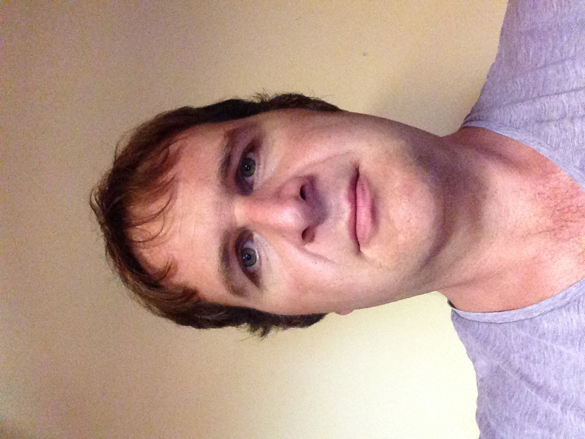
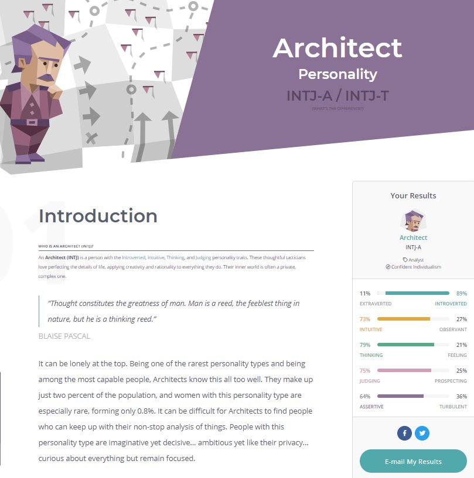
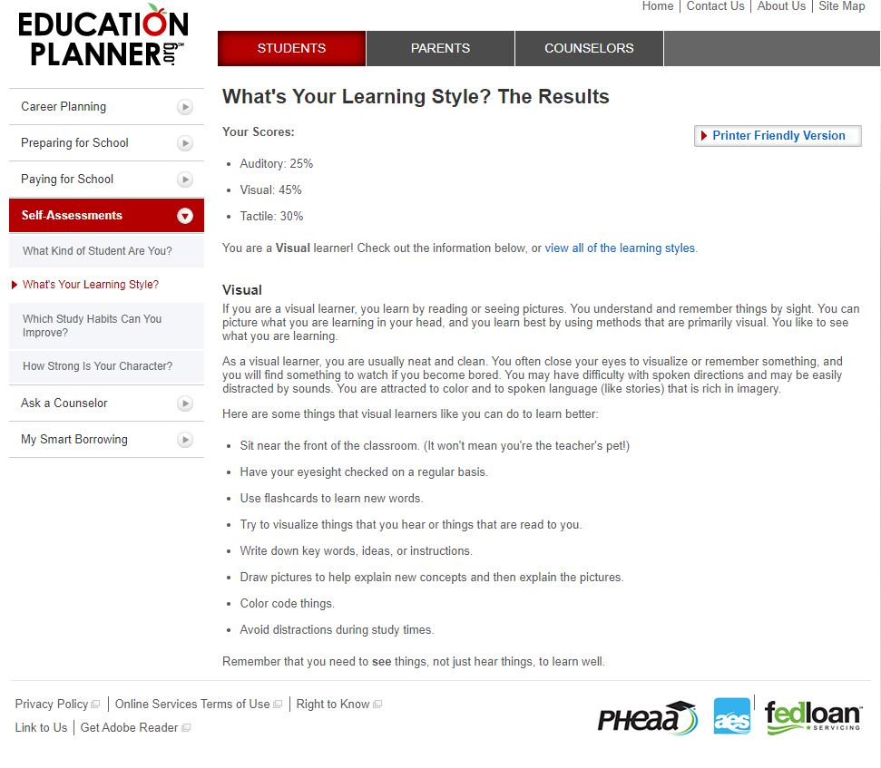
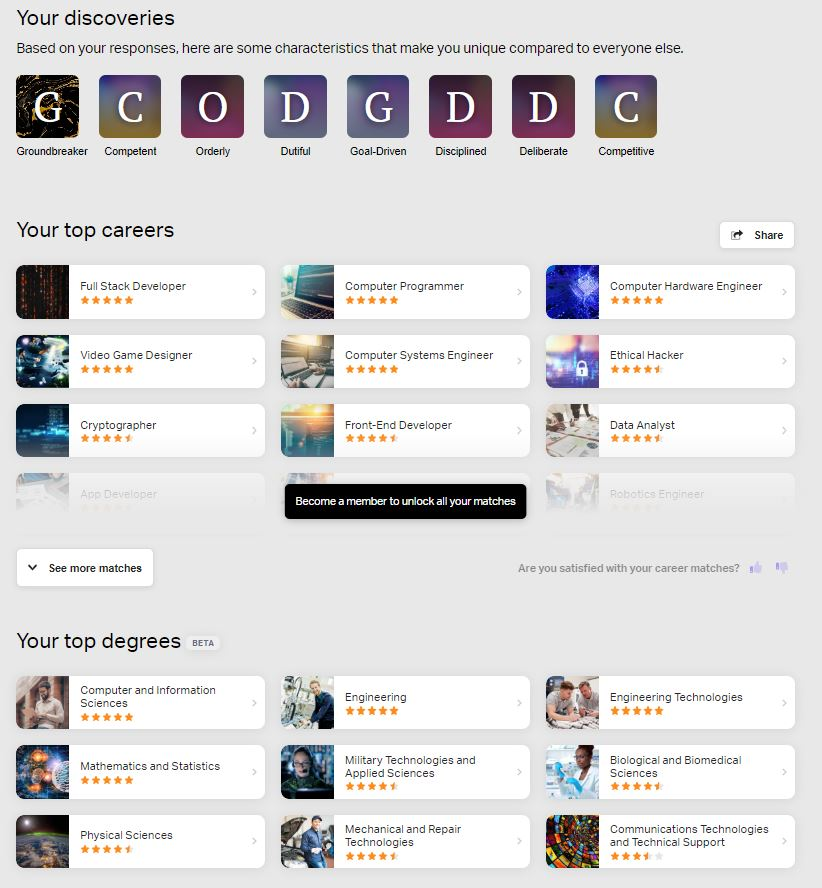

Doug
I have chosen to study at RMIT to change my career path and I found this university to have a great reputation in the I.T field. I have always been involved in computers my whole life my first computer was an Atari st, my next computer was a Pentium 100, back then it was the best technology, after that i found myself rebuilding computers for gaming. I enjoy online gaming when i have time, i go on discord and chat with friends while playing, my favorite games include Conan exiles and Rust. As for my working life I worked for a bathroom renovation company where I eventually became a tradesman after that, I entered the mining construction industry which i have done on and off for 5 solid years. What lead me to study again was the fact That I am not happy in my current career, I believe I have more to offer than being a trade assistant in the mines or renovating bathrooms. Another reason I have choosen I.T is I have become older and I need to have a field with is less physical and more mental, I believe that I.T is a massively growing industry which will have a great demand in the future, I want to fill that demand. After I Graduate I want to continue study in the A.I field, Humankind has only scratched the surface of this field and I believe the future is automation, robots, Robotic suits and limbs to give back disabled peoples ability to walk again or use their arms again. There will be self driving cars and perhaps even aircraft. All these possible advancements will need an I.T professional to come part of it, which will be me. I was born in Australia but my father was born in Denmark, my family and I still maintain our culture at Christmas time. Back in 2005 i started a bachelor of science degree at Adelaide university where i did around 1.5 years towards the degree. My interests include fishing and gaming.
Personal Profile
Below you will find my three results from my personality myers-briggs test,learning test and my own personallity choosen test career and education test
Myers-Briggs
Learning test
Career test
These test results show me I am determined person with a logical thinking mind, my independent test shows I have chosen the right path in studying I.T., The results suggest im a lone wolf that likes working alone however im happy to working a team, I am not the type of person that wants a leader role for the sake of being a leader,but I will takeover if I am the best person for the job to move from point a to b. In forming a team I would want everybody that wants to do the best job possible If there member on te team that just wants a 50% pass mark it would annoy me because he/she will let everybody else down.